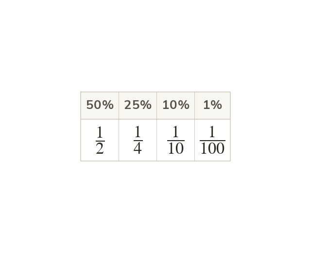

Per hundred
Per cent means per hundred: a percentage is a fraction out of 100. 50% is a half, 25% a quarter, 10% a tenth, 1% a hundredth.
Per cent means per hundred, so a percentage is a fraction out of 100. 50% is a half, 25% a quarter, 10% a tenth and 1% a hundredth.